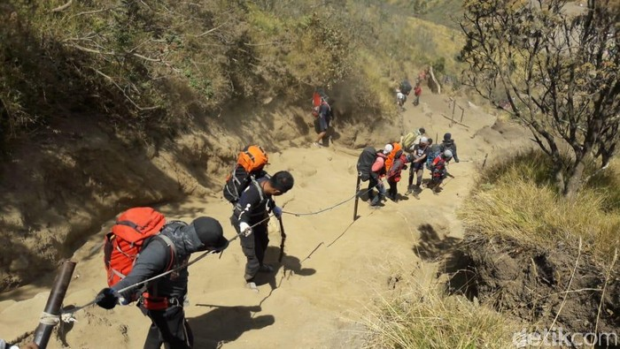

Gunung Merbabu dikenal melalui naskah-naskah masa pra-Islam sebagai Gunung Damalung atau Gunung Pam(a)rihan. Di lerengnya pernah terdapat pertapaan terkenal dan pernah disinggahi oleh Bujangga Manik pada abad ke-15. Menurut etimologi, "merbabu" berasal dari gabungan kata "meru" (gunung) dan "abu" (abu). Nama ini baru muncul pada catatan-catatan Belanda.Gunung ini pernah meletus pada tahun 1560 dan 1797. Dilaporkan juga pada tahun 1570 pernah meletus, akan tetapi belum dilakukan konfirmasi dan penelitian lebih lanjut. Puncak gunung Merbabu berada pada ketinggian 3.145 meter di atas permukaan air laut.
| GUNUNG MERBABU |
|  |
| Titik Tertinggi | Ketinggian: 3.145 m (10.630 kaki)
Masuk dalam daftar: Ribu
Koordinat: 7.5°S 110.4°E |
| Letak | Semarang, Boyolali, Magelang (Jawa Tengah), Indonesia. |
| Geologi | Jenis gunung : Stratovolcano. |
| Letusan terakhir | 1797 |
Masyarakat di sekitar Merbabu mayoritas beragama Budha[butuh rujukan] sehingga akan kita temui beberapa Vihara di sekitar Kopeng. Penduduk sering melakukan meditasi atau bertapa dan banyak tempat-tempat menuju puncak yang dikeramatkan. Pantangan bagi pendaki untuk tidak buang air di Watu Gubug dan sekitar Kawah. Juga pendaki tidak diperkenankan mengenakan pakaian warna merah dan hijau.
Pada tahun baru jawa 1 suro penduduk melakukan upacara tradisional di kawah Gunung Merbabu. Pada bulan Sapar, penduduk Selo (lereng Selatan Merbabu) mengadakan upacara tradisional.
Anak-anak wanita di desa tekelan dibiarkan berambut gimbal untuk melindungi diri dan agar memperoleh keselamatan. Perjalanan dari Pos Tekelan yang berada di tengah perkampungan penduduk, dimulai dengan melewati kebun penduduk dan hutan pinus. Dari sini kita dapat menyaksikan pemandangan yang sangat indah ke arah Gunung Telomoyo dan Rawa Pening.
Di Pos Pending pendaki dapat menemukan mata air, juga kita akan menemukan sungai kecil (Kali Sowo). Sebelum mencapai Pos I pendaki akan melewati Pereng Putih dan harus berhati-hati karena jalanan yang sangat terjal. Kemudian pendaki melewati sungai kering, dari sini pemandangan sangat indah ke bawah melihat kota Salatiga terutama pada malam hari.
Jalur Pendakian Gunung Merbabu cukup populer sebagai ajang kegiatan pendakian. Medannya tidak terlalu berat namun potensi bahaya yang harus diperhatikan pendaki adalah udara dingin, kabut tebal, hutan yang lebat namun homogen (hutan tumbuhan runjung, yang tidak cukup mendukung sarana bertahan hidup atau survival), serta ketiadaan sumber air. Penghormatan terhadap tradisi warga setempat juga perlu menjadi pertimbangan.
Untuk lebih lengkapnya mengenai Gunung Merbabu, silahkan buka: Gunung Merbabu
Adapun untuk lebih jelasnya mengenai Letak Geografis, Dapat dibuka: Geografis Merbabu
Info Pendakian >>>